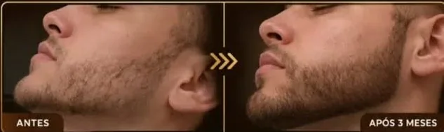
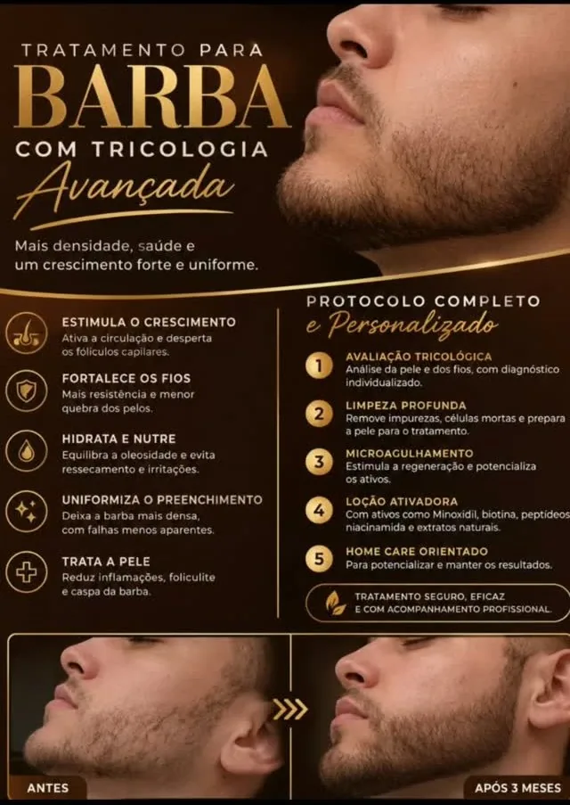

Buracos no rosto, barba rala ou que não fecha. Com tricologia avançada, o objetivo é mais densidade, saúde e um crescimento forte e uniforme.

Você fala direto comigo no WhatsApp.
Ativa a circulação e desperta os folículos.
Fios mais resistentes e menos quebra.
Barba mais densa, com falhas menos aparentes.
Ajuda com inflamação, foliculite e caspa da barba.
Análise da pele e dos fios, com diagnóstico individualizado.
Remove impurezas e células mortas e prepara a pele para o tratamento.
Estimula a regeneração e potencializa os ativos.
Com ativos como minoxidil, biotina, peptídeos, niacinamida e extratos naturais, conforme o seu caso.
Para potencializar e manter os resultados.

Resultados variam de pessoa para pessoa.
Depende da causa. Por isso a avaliação vem primeiro: eu te digo com sinceridade o que dá para esperar no seu caso.
O microagulhamento pode causar um leve desconforto, geralmente bem tolerado. A sensibilidade varia de pessoa para pessoa.
O número de sessões e o tempo de tratamento são definidos na avaliação, de acordo com o seu caso.
[VALOR / “o valor depende do plano indicado na avaliação”]. Me chama no WhatsApp que eu explico tudo com transparência.
Barbearia parceira no Centro — Av. Amazonas, 330. Você faz a barba e o tratamento no mesmo lugar.
Ver locais e dias de atendimentoMe conta o seu caso pelo WhatsApp e agende a sua avaliação.
Agendar avaliação ← Voltar para o início